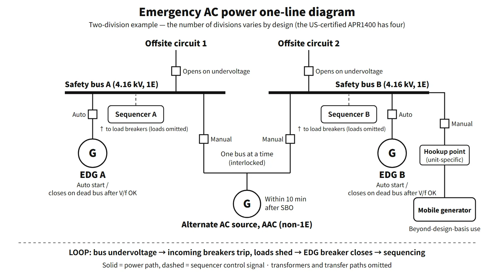

Systems & Equipment · C-SY-003
Emergency Diesel Generator (EDG) — Auto-Start Signals, Load Sequencing, Valid Tests and Reliability
How the EDG starts, picks up safety loads step by step, and is tested and trended to keep its reliability at 0.95 or 0.975 per demand.
The emergency diesel generator (EDG) is the onsite emergency (standby) AC source that powers the Class 1E AC safety buses when offsite power is lost. It must start automatically within a specified time and pick up safe-shutdown and accident-mitigation loads in sequence, and one is installed independently in each division.
The basis is GDC 17 of 10 CFR 50 Appendix A and RG 1.9 Rev. 4 (which endorses IEEE Std 387-1995).
Principle and mechanism
Standby — kept warm, oil kept moving
An EDG sits idle and must reach rated conditions within seconds. So even in standby the jacket cooling water is heated and circulated by electric heaters, and the lube oil is heated and circulated (prelubrication). This prevents "dry starts" that damage bearings and cylinder liners. The engine starts on compressed air; each division has its own air receivers holding enough air for at least five starts without the compressors. On an emergency start signal, speed and voltage are adjusted automatically in isochronous mode. All protective trips except engine overspeed and generator differential current are bypassed, and the bypassed state is annunciated in the main control room.
Auto-start signals and the response to each
The automatic start signals for EDGs at OPR1000- and APR1400-type plants are:
- Loss of offsite power (LOOP): actuation of the first-level undervoltage (LOV) relays on the 4.16 kV safety bus
- Degraded voltage: second-level undervoltage (DVR) relays, which detect a sustained low voltage (longer than a motor start) after a time delay
- Engineered safety features actuation signals: safety injection (SIAS), containment spray (CSAS), auxiliary feedwater (AFAS)
- Manual: emergency start button in the main control room, or locally
The APR1400 has four LOV and four DVR relays on each bus, combined in two-out-of-four coincidence logic. The same signal produces a different response depending on whether offsite power is available.
| Situation | EDG response | Safety bus |
|---|---|---|
| ESF signal alone (offsite power available) | Starts, reaches rated conditions, then runs unloaded on standby | Fed by offsite power; safety loads start on offsite power |
| LOOP alone | Starts → breaker closes → load sequencing | Incoming breakers open and loads are shed; the EDG energizes the bus and safe-shutdown loads are sequenced on |
| LOCA + LOOP (in either order) | Same as above | The sequencer loads the accident loads, such as the safety injection pumps, in order |
When offsite power returns, the safety bus is synchronized and paralleled with offsite power, the load is transferred, and the EDG is stopped manually.
Load sequencing — why the loads cannot all go on at once
Most emergency loads are large induction motors with starting currents of five to eight times rated current. Applied simultaneously to a capacity-limited source such as a diesel, they would collapse the voltage so that motors fail to start or contactors drop out. The sequencer therefore applies the loads in steps at set intervals. The criteria in RG 1.9 Rev. 4, C.1.4, are:
| Item | Criterion |
|---|---|
| Minimum during loading | Frequency ≥ 95 % of rated, voltage ≥ 75 % of rated |
| Recovery | Voltage within ±10 % within 60 % of each sequence interval (frequency within ±2 % in less than 60 %) |
| Loss of the largest single load | Frequency recovers within 80 % of the interval; speed ≤ rated + 75 % of (overspeed trip setpoint − rated), or 115 %, whichever is lower |
| Loss of full load | Overspeed trip setpoint not reached |
In the APR1400 design certification documents, the EDG reaches rated conditions and its breaker closes within 17 s, and the sequencing steps then run from 5 to 30 s counted from that moment.
![Left panel: EDG with day tank and two starting-air receivers, plus cards for at least five air starts without compressors, keep-warm and prelube, and a day tank separate from the 7-day storage. Right panel: safety-bus voltage and frequency versus time after LOCA and loss of offsite power; the bus is dead until the breaker closes at 17 s, then six sequencer steps at +5 to +30 s each cause a dip that stays above the 75 % voltage and 95 % frequency floors and recovers to the 90 to 110 % and 98 to 102 % bands within 3 s of each 5 s interval](../../assets/images/concepts/c-sy-003-emergency-diesel-generator/fig1-edg-load-sequence.webp)
What it means in a plant
Design basis — what an EDG must have
- Capacity: at initial design, continuous rating = sum of conservatively estimated connected loads + 10–15 % margin; at the operating licence stage, at least 5 % margin over the maximum design-basis load.
- Start time: RG 1.9 does not fix a number; it requires rated conditions "within the time in the technical specifications (T/S)". The value comes from accident-analysis assumptions such as the ECCS injection time. Plants based on the CE standard technical specifications use 10 s; the APR1400 uses 17 s.
- Fuel: onsite storage sufficient to supply the ESF loads for seven days after a design-basis accident with LOOP. The day tank is separate.
- Independence and redundancy: the safety function must be performed even with a single failure assumed. Each division has its own room, its own sequencer and controls, and there are no cross-connections between divisions.
- Testability: each division can be tested during operation; the main control room shows test, standby and lockout status and the first-out trip.
APR1400 design example
In the US-certified APR1400 design there are four divisions with four EDGs (divisions A and B 9,100 kW, C and D 7,500 kW), a start time of 17 s and seven days of fuel; for station blackout (SBO), a non-1E gas-turbine alternate AC source is connected within 10 minutes. Two-division arrangements also exist, so the number of divisions, EDG ratings and start time are plant-specific and come from each plant's FSAR and T/S.
Testing and reliability
Test intervals (RG 1.9 Rev. 4, Table 1)
| Interval | Test |
|---|---|
| 31 days | Start (slow start allowed) + at least 1 hour at 90–100 % of continuous rating |
| 184 days | Fast start from standby (within the T/S time), then loaded run |
| Refuelling outage (within 24 months) | Simulated LOOP, SIAS, combined SIAS + LOOP, loss of the largest single load, loss of design load, 24-hour endurance (2 h at 105–110 % + 22 h at 90–100 %), hot restart, synchronization, trip bypass, test-mode override |
| 10 years | Simultaneous start of redundant EDGs (an independence test checking for common-cause failure modes) |
During the refuelling outage, in addition to these tests, the plant carries out the manufacturer-recommended overhaul (cylinder heads, liners, bearings, turbocharger, governor), fuel-oil and lube-oil analysis, draining of the air receivers, generator insulation-resistance measurement and protective-relay calibration. The purpose is to confirm the response to accident conditions under real load and to find degradation.
Valid tests and how failures are counted
RG 1.9 counts start demands and load-run demands from both real demands and tests. Failing to reach the specified voltage and frequency within the specified time is a start failure; starting but failing to pick up and carry the load is a load-run failure. A condition found during maintenance that would certainly have caused a failure had there been a demand counts as one valid demand and one failure. The following are not counted as failures:
- Operation of a trip that is bypassed in the emergency mode (for example high coolant temperature)
- Failure of equipment not needed for emergency operation (for example the synchronizing circuit)
- A test deliberately stopped because of an abnormality, such as a small leak, that would not have led to serious damage
- A malfunction or operating error after which the unit could have been restarted and loaded within 5 minutes without maintenance
- A failure caused by disabling part of the starting system for the test (when the unit then started successfully in its normal alignment)
Some older technical specifications based on the CE standard technical specifications required testing every 31 days if there had been three or fewer failures in the last 25 valid tests, and every 7 days if there had been four or more, keeping the 7-day interval until seven consecutive tests had passed without failure. The former RG 1.108 shortened the interval to as little as 3 days, but critics pointed out that frequent fast starts actually accelerate engine degradation; from RG 1.9 Rev. 3 (1993), slow starts were allowed and a reliability program was introduced. The reliability program has six elements: surveillance, performance monitoring, maintenance, root-cause investigation, data management and problem closure. The target reliability under RG 1.155 is 0.95 or 0.975 per demand, an input to determining the SBO coping duration.
Regulatory and design criteria
The criteria below are examples from the United States (US NRC) and from the standard technical specifications. RG 1.9 Rev. 4 (2007) absorbed the periodic-testing requirements of the former RG 1.108. IEEE 387 has since been revised as the 2017 edition and as the joint standard IEC/IEEE 63332-387:2024.
| Basis | Key point |
|---|---|
| 10 CFR 50 Appendix A, GDC 17 and 18 | Onsite and offsite power; independence, redundancy and testability with a single failure; capability for testing and inspection |
| RG 1.9 Rev. 4 (2007) | Endorses IEEE 387-1995; loading criteria, trip bypass, valid-test definitions, test table |
| RG 1.155 / 10 CFR 50.63 | SBO coping, target reliability 0.95 or 0.975, AAC within 10 minutes |
| SRP 9.5.4–9.5.8, RG 1.137 | Seven days of fuel, support systems |
| Standard technical specifications 3.8.1–3.8.3 (e.g. NUREG-1432) | AC power LCO, EDG surveillance requirements, fuel oil, lube oil and starting air |
Easily confused pairs
| EDG | Alternate AC diesel generator (AAC DG) | Mobile generator | |
|---|---|---|---|
| Event it covers | LOOP (including with an accident) | SBO (EDGs also lost) | Beyond-design-basis events such as ELAP |
| Classification | Class 1E | Non-safety (seismic category is plant-specific) | Non-safety |
| Start and connection | Automatic start and automatic closure | Manual connection, within 10 minutes | Manual hookup, in hours |
| Bus supplied | 4.16 kV safety bus of its own division | Safety bus A or B via the AAC bus | Safety bus or 480 V load-centre connection point (unit-specific) |
Older usage sometimes called a safety bus that is dead because offsite power is lost a "station blackout". Today SBO means that offsite power and the EDGs are both lost, so it is worth making the terminology explicit.
Key points at a glance
- Definition: onsite emergency AC source that powers the Class 1E safety buses on LOOP (GDC 17).
- Function: supplies loads for maintaining safe shutdown, removing decay heat and mitigating accidents (ESF).
- Auto-start signals: safety-bus undervoltage (LOV) and degraded voltage (DVR), SIAS, CSAS, AFAS, manual.
- Response by signal: ESF alone → unloaded standby run; LOOP → load shedding, breaker closure, sequencing.
- Start time: the T/S value (from accident-analysis assumptions), e.g. 10 s (CE type), 17 s (APR1400).
- Loading criteria: frequency ≥ 95 %, voltage ≥ 75 %; recovery to ±2 % and ±10 % within 60 % of the interval.
- Design: continuous-rating margin, five air starts, seven days of fuel, trip bypass (overspeed and differential retained), divisional independence.
- Testing: 31-day loaded run, 184-day fast start, outage tests (LOOP, combined SIAS, load rejection, 24 h), 10-year simultaneous start.
- Reliability: valid-test counting and exceptions, shorter intervals as failures accumulate, target 0.95 or 0.975, reliability program.
- Plant-specific values: number of divisions, ratings and start time come from each plant's FSAR and T/S (e.g. US-certified APR1400: four EDGs, 17 s).
